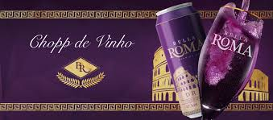

Bem-vindo ao mundo da satisfação líquida!
Bella Roma Chopp de Vinho é uma bebida deliciosa que combina o sabor orgânico do vinho com a leveza e refrescância do chopp. Originária da Itália, esta bebida oferece uma experiência única, onde os aromas frutados e a textura suave do vinho se fundem harmoniosamente com a carbonatação e o frescor do chopp. Com um equilíbrio perfeito de sabores, o Bella Roma Chopp de Vinho é uma escolha sofisticada para quem busca uma alternativa refrescante e elegante às bebidas tradicionais. Experimente e deixe-se envolver pela excelência italiana em cada gole.
Minha intenção é garantir que essa marca irá te "Proporcionar uma boa qualidade e uma boa experiência. Mas é o de sempre, beba com moderação".
Benefícios
- Boa qualidade
- Diversos tipos de chopp de vinho
- Mais de anos de experiência